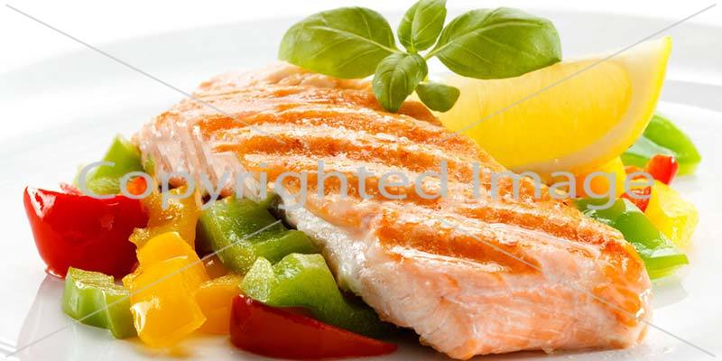
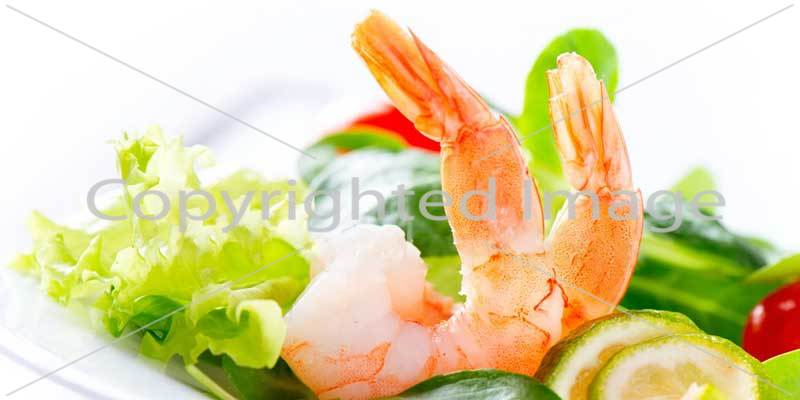

Cooking the perfect Pizza
By Christos on May 1977, in pizza
Leverage agile frameworks to provide a robust synopsis for high level overviews. Iterative approaches to corporate strategy foster collaborative thinking to further the overall value proposition. Organically grow the holistic world view of disruptive innovation via workplace diversity and empowerment.
read more →
Working with raw materials.
By Christos on May 1977, in cooking
Bring to the table win-win survival strategies to ensure proactive domination. At the end of the day, going forward, a new normal that has evolved from generation X is on the runway heading towards a streamlined cloud solution. User generated content in real-time will have multiple touchpoints for offshoring.
read more →When arriving in town, this is one of the first stops for something interesting and amazing to eat. The menu has choices for everyone and it is the kind of place you want to come back to. I love the fish and chips there as well..

Managing your own kitchen
By Christos on May 1977, in Organization
Capitalize on low hanging fruit to identify a ballpark value added activity to beta test. Override the digital divide with additional clickthroughs from DevOps. Nanotechnology immersion along the information highway will close the loop on focusing solely on the bottom line.
read more →

Greek recipes from the past
By Christos on May 1977, in recipes
Efficiently unleash cross-media information without cross-media value. Quickly maximize timely deliverables for real-time schemas. Dramatically maintain clicks-and-mortar solutions without functional solutions.
read more →